For Parents & Fans
Switch to Fan Mode, add your player, link their team via GameSheet, and start following their schedule and stats.
Getting Started
Tap the Mode tab at the bottom of the screen. You'll see a switcher with two options — Coach Mode and Fan Mode. Tap Fan Mode to switch.
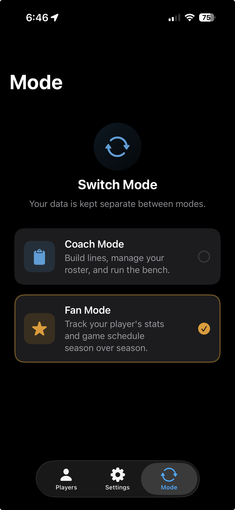
A short 2-page carousel walks you through what Fan Mode offers. Swipe through both pages, then tap Get Started to continue.
My Players
The My Players screen starts empty. Tap the Add Player button to open the player setup wizard.
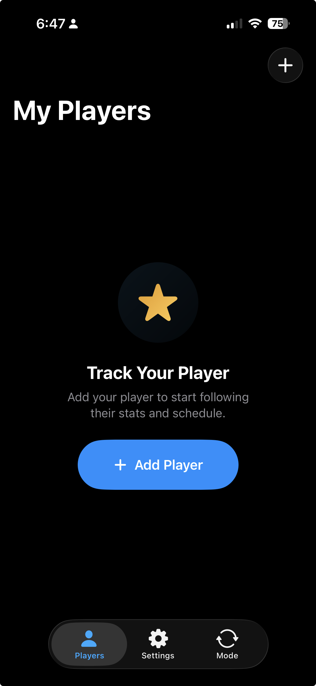
Fill in their first name, last name, and jersey number. Optionally add their position and a photo. Tap Next when you're ready.
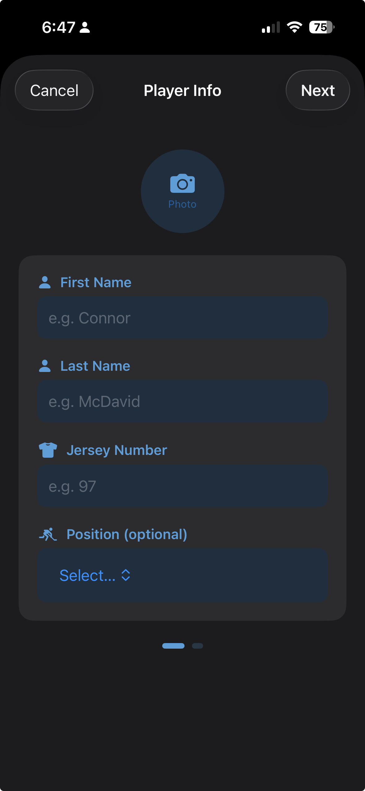
GameSheet Link
Type your league's name into the search field — for example "Greater Toronto Hockey League". Matching leagues appear as you type. Tap yours to continue.
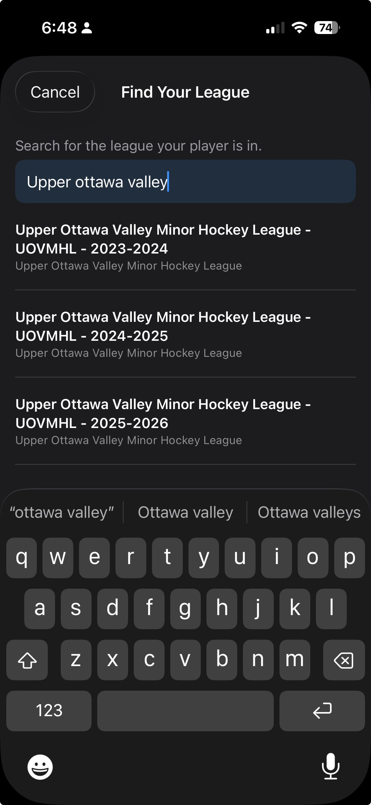
After selecting a league, you'll see a list of its divisions. Tap the one that matches your player's age group and level.
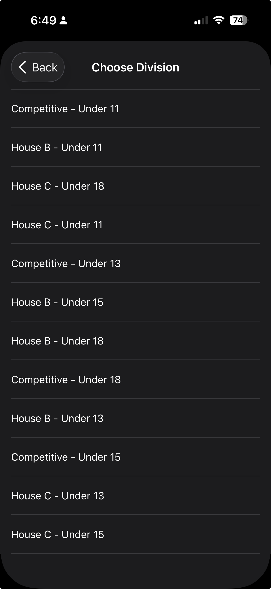
A list of teams in that division appears. Tap your player's team to move to the final confirmation step.
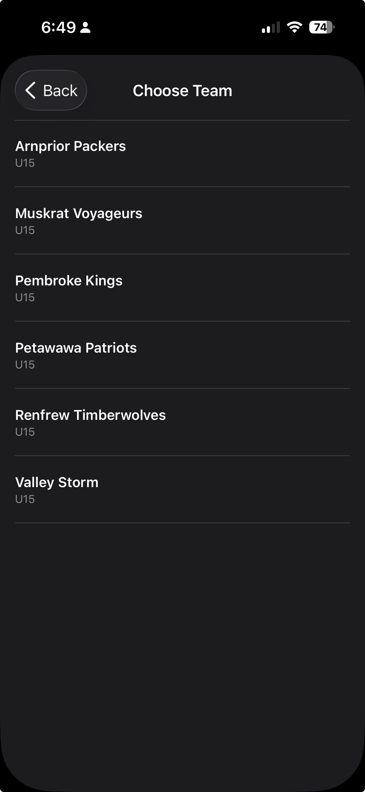
Rinkside shows the jersey numbers on the team's GameSheet roster. Confirm your player's number to complete the link. If the number was updated, you can correct it here.
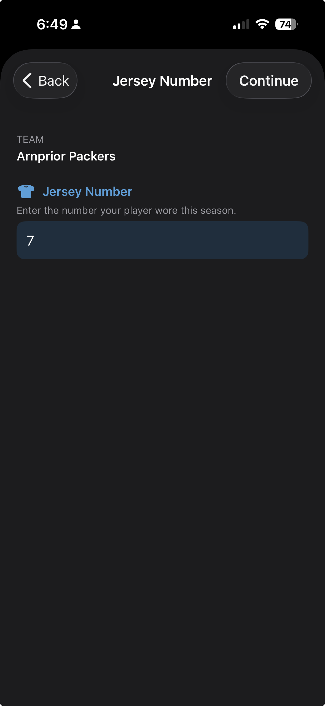
Following Your Player
Rinkside fetches your player's game history from GameSheet. A progress bar shows how far along the import is — this usually takes just a few seconds.
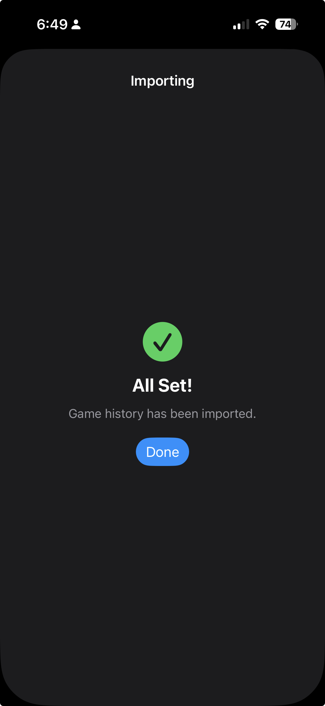
The Schedule tab shows every game played this season — each row includes the result badge, score, date, and your player's per-game performance.
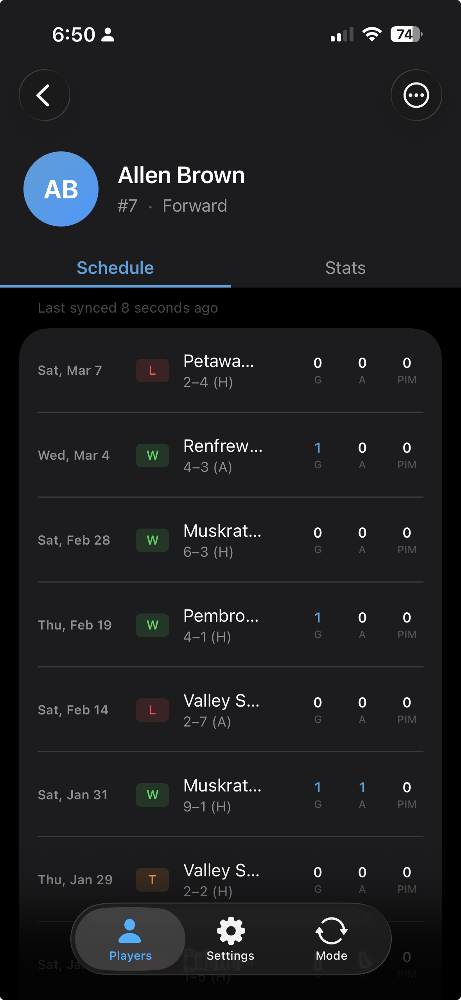
Tap the Stats tab to see your skater's season-long totals at a glance, plus a year-over-year comparison table showing how this season stacks up against previous ones.
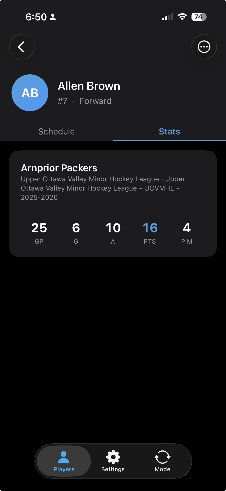
For goalies, the Stats tab displays a different set of season totals focused on net performance, along with the same year-over-year comparison table.
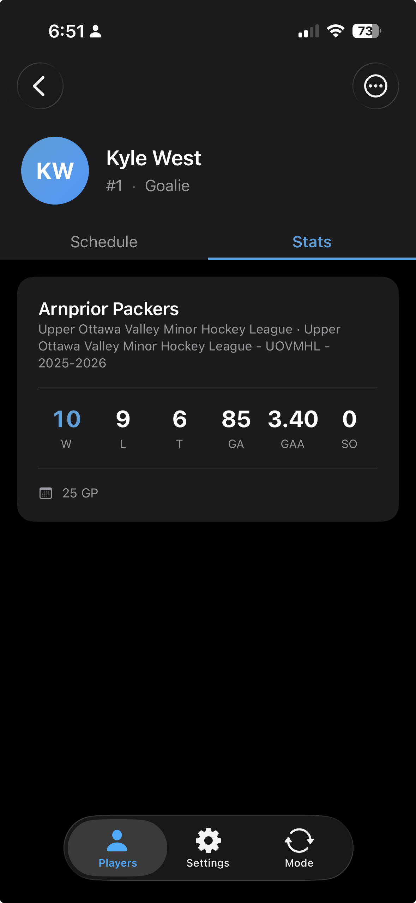
Rinkside is currently in beta. Request TestFlight access to get started.
Request TestFlight Access